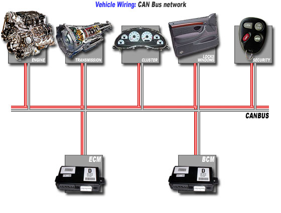
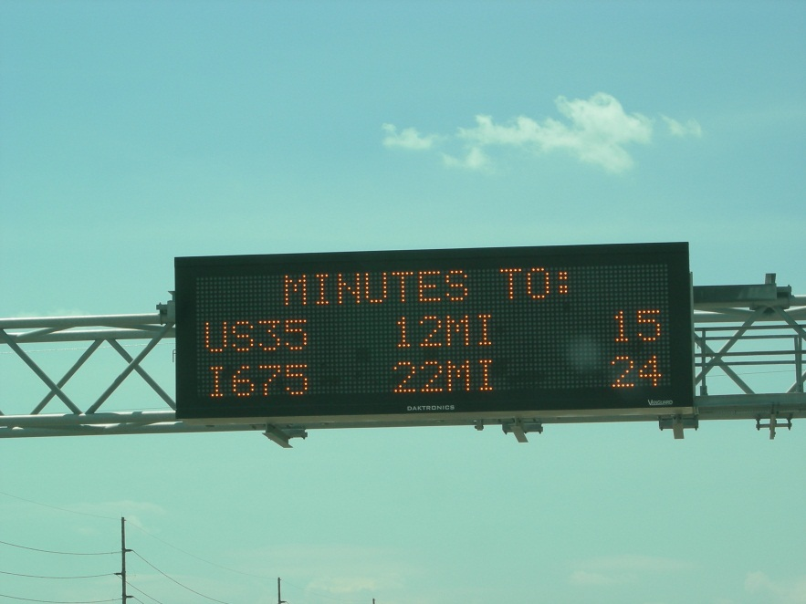

As more technology gets added to vehicles, there is a general increase in the total number of attack surfaces in those vehicles. This problem presents itself in a large number of ways --everything from relay and replay attacks of key unlock signals, to stealing vehicles, to things as simple as sending signals to change the car’s internal LEDs to be a fun new color. If it involves using technology in a way that is not intended in a vehicle, it falls into the realm currently popularly referred to as ‘car hacking.’
Why is it important?
Cars represent one of the biggest investments in most peoples’ lives, but some of the scariest car hacking doesn’t stop at stealing vehicles. Some of the most impressive and most terrifying hacks don’t stop at theft; they can include things like turning off the engine while the car is moving, posing severe safety risks to car operators.
What is a CAN Bus?

Figure 1: A CAN bus
Your car, like most of your life, has a computer attached to it. Unlike any of the other computers in your life, this one can tell you things such as why your ‘check engine’ light is on. You can actually buy a device to tell you things like fault codes for around $10 at Walmart. Your car sends all of this information in a really simple way. It connects a bus to every part of your car that could want to communicate with each other, and they all can send and receive messages over this bus. This bus is called the CAN (Controller Area Network) bus. Before CAN, every ECU (Electric Control Unit), the board that runs a particular subsystem of your car like the brakes, has a BCM (Break Control Module), would run wires to every other part of the car it would want to network with. This got really complicated and cumbersome as more connections meant more and more wire. That is the problem that CAN is trying to solve. Now everything just sends its messages to one place and its gets where it is going. Very cool and simple, but very unsecure. Sometimes cars actually have multiple busses, but they all work similarly and have the same problems. While different car manufactures have different protocols, the basic idea is the same. Right now, the way CAN works it has no authentication or signing, which means if you can get to a point where you can send signals over it, you can pretend to be any piece of the car that is willing to listen. This gets really exciting the more pieces of a car are listening as a result of things like parking assist, where the car can move the steering wheel for you. Send a signal asking for the wheel to turn and it will do it, no questions asked.
Interesting Example
Wired video on the Hack
Full paper, lots more detail: http://illmatics.com/Remote%20Car%20Hacking.pdf
Defcon talk for more info but less reading:
One of the most interesting and most widely talked about exploits was an issue that Chrysler had in their vehicles as a result of allowing access to a vehicle through the cellular system. Once the computer could issue generic commands, CAN bus commands could be issued and this means that a lot more dangerous stuff could happen, like turning off the engine. This exploit was patched by Chrysler but it brought a lot of publicity to the realm of car hacking, not to the joy of Jeep owners.
Lack of Standards
Each car manufacturer has different ECUs and as a result has different signals that get sent across CAN. The messages that each car sends have to be reverse engineered separately; there is not a rainbow book for all cars, but a lot of information is published about information like error codes so that devices to run diagnostics work. Interestingly, this is less of a problem in tucks which have a lot more standards in their CAN messages, and there is even a push to use CAN to log things like time driving in long distance trucks to better enforce existing trucking regulation.
Going Forward
Car hacking is an increasingly important issue as we start to see a myriad of new technological advancements around motorways. The biggest and most interesting of these is self-driving cars, but along with this advancement also brings a lot of questions into the mix about the kind of infrastructure that is going to be put in place to support vehicles. Some really interesting proposals are in place to add communication between cars as well as from roads to vehicles. These have the potential to do great things like dramatically lowering vehicle collisions, but the increased size and complexity of networks, as well as the impact of the information that vehicles receive, all mean more attack surfaces with dire consequences. Even now, trivial but really basic implementations of this are in place to judge how long it takes to travel a section of road. Signs like the one in Figure 2 frequently gets their information by tracking Bluetooth mac addresses across a series of checkpoints to see on average how long a vehicle take to go a certain distance based on how long Bluetooth devices on board that vehicle take to travel that distance.

Figure 2: A DMS showing traffic
The bottom line is that more technology is going into the dangerous vehicles we ride in every day, and we need to think long and hard as we add connectivity to all of these computers.
Other Interesting Reading
Check out Hack a Day breaking down CAN and spoofing RPM signals to make a car standing still have its tachometer pegged.